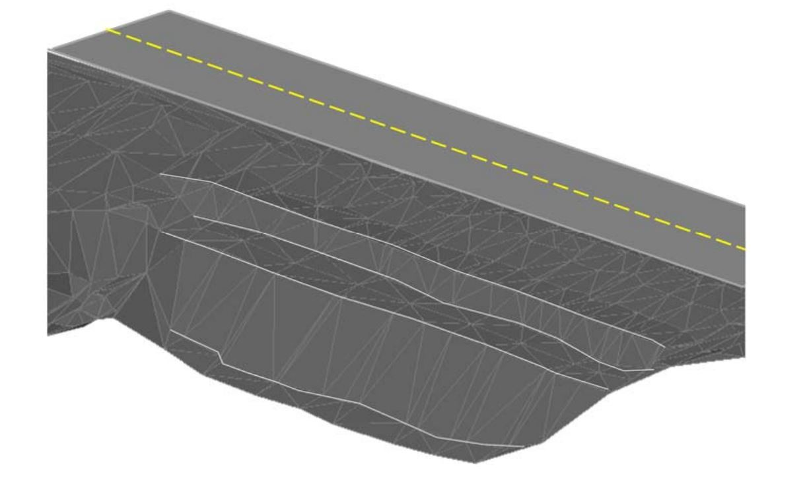

I'm a Civil Engineer and currently pursuing a Ph.D. degree. After my bachelor's degree,
I had the opportunity of gaining experience in the transportation field +5 years,
especially in the Latin-American & Caribbean (LAC) Region. I have comprehensive experience
in the transportation field including, highway design, slope-stability analysis and modeling,
and in a lesser way traffic analysis and modeling, and ground improvement technics.
Currently, I'm conducting my research in traffic operation developing an optimization
algorithm to exploit Connected and Automated Vehicles capabilities to improve traffic
performance under the advising of Dr. Lily Elefteriadou.
My research is motivated by the
desire of providing commuters with more freedom of doing other tasks while driving.
I like to focus on designing projects that tackle our diverse communities' problems
focusing on innovation, safety, sustainability, operation performance, and the economy of the project.
Here are my RESUME in modern and
classic
format for your convenience.
I am currently looking for internships for Summer 2022.

Summary
Developing algorithms to optimize traffic performance in urban seeting. The conceptual framework is applicable for
simulation tools as well as real world implementations. Different types of optimization technics (LP, MINLP, INLP) are applied to
minimize travel time considering CAV capabilities. Statistical analysis is performed to obtain the statistical significance of the improvement
achieved by the optimization algorithm.
Tools
Python, CPLEX, gurobi, AMPL, MiniZinc, VISSIM.

Summary
This project is on hold. During my short consultancy period in this project,
I provided visibility assessment for the project and geometric design assessment for other projects in parallel.
The visibility and geometric design were modeled on AutoCAD Civil 3D.
In addition, some conceptual design and earthworks estimation were conducted for other small projects in parallel.
Tools
AutoCAD Civil 3D, MS. Excel, Infraworks.

Summary
This research was conducted to fulfill the Master's degree requirement in Civil Engineering at KU.
This study seeks to assess driver behavior in a simulated Connected environment.
Furthermore, lane-changing models were developed and implemented in the driver simulator.
Tools
SPSS, MiniSIM, Fixed Based Driving Simulator, R, eyetracking device.

Summary
TThe project consisted of a boulevard design type of two lanes per direction in moderate terrain over an alignment of 13KM.
Several alternatives were proposed including roundabouts, interchanges, etc.
The construction cost of the project was approximately $90 U.S Millions.
I served as a lead design engineer and actively participated in the coordination of the project.
Tools
AutoCAD Civil 3D.

Summary
As one of the most ambitious projects, I've worked on. This project considered the design and rehabilitation of around 153KM.
The project is located through mountainous terrain surrounding the oriental region of the capital city of Colombia "Bogota".
This project considered several roundabouts, interchanges, bridges, and its construction cost was estimated son $1.0 U.S Billions.
I served as a lead highway design engineer and coordinate the design team and provide help to the topographic and environmental assessment team.
Tools
AutoCAD Civil 3D.

Summary
The line 1 of the Panama Metro included several changes in the geometry of local roads.
This was mainly due to the construction of the piles that support the elevated sections of the metro.
After the piles were located improvements were planned to be made to the geometry of the affected roadways.
In this case, I had the opportunity of getting involved in this stage of the project providing alternatives
to enhance the conditions for pedestrians and mobility of local transit.
More space provided for pedestrians near the transit system (metro and bus),
U-turns were designed to alleviate congestion on nearby traffic signals.
Tools
AutoCAD Civil 3D.
Summary
This project was a widening from 2 to 4 lane-highway in a rural setting.
I had the opportunity on providing assistance to the geotechnical department on modeling and
analyzed several alternatives to ensure the stability of slopes and embankments.
Furthermore, I helped with the draining works and anti-erosion plans.
I also had the opportunity on helping with some ground improvement technics such as MSE walls, gabions,
and draining of the stabilization works.
Finally, I got involved in providing some enhancement in the geometry reducing earthworks.
Tools
AutoCAD Civil 3D.

Summary
This project was also a widening project from 2 to 4 lanes highway. In this project,
I helped with the design of several roundabouts in an urban setting.
Improvement on the sidewalks and transit system were provided.
Accessibility was carefully studied to provide access to motion-impaired people.
In addition to the geometric design, I was involved in the creation of the DTM (Digital Terrain Model) of the project.
I also participate in the traffic signal assessment team by following the MUTCD and local agencies' normative.
Tools
AutoCAD Civil 3D.

Summary
This project was a geotechnical project. In this case, we had to characterize the soil type,
the type of problem and provide several alternatives to solve the problem. Several methods such as gabions,
soil replacement, draining works, shotcrete, soil nailing, and reshaping were proposed.
My role on this project was more focused on the creation of virtual models on the
Slide-RockScience software to evaluate the FS for the alternatives.
In addition, I had to create the 3D models for later final drawings.
Tools
AutoCAD Civil 3D, Slide-RockScience.

Summary
This was a feasibility study for one of the more ambitious hydroelectric projects in the country. Its execution is on hold.
However, I had the opportunity of providing the geometric design of the access roads to complete the project.
These roads were mountainous roads with grades around [6-12%] and above in some cases. The roads passed through the virgin jungle
and they were meant to remain after the finalization of the project providing accessibility to the project and indigenous
communities in the area. In addition to the geometric design, I also completed estimation of the earthworks required for
the project and assessment of the draining works required to complete the project.
I also did a minor collaboration with the geotechnical team to evaluate alternatives to provide construction plans for the project.
Tools
AutoCAD Civil 3D.
Summary
TThis project also a widening was completed for touristic purposes. Converting a boring road into pleasant walking or
driving experience. We added several mini-roundabouts to improve mobility for vehicles we also added sight-scene places,
cycle paths and enhanced the pedestrian path for recreation. Parks for children were also designed. My role on this project
was on developing the DTM of the project as well as
providing assistance to the traffic signal team and geotechnical team to provide alternatives for the construction.
Tools
AutoCAD Civil 3D.

Summary
This project was the first big project I had the opportunity to work on. This ambitious project considers
a marine viaduct that surrounds the old town of Panama City. Several amenities such as skate parks, basketball,
tennis courts were added for recreation. The boulevard also improved mobility in an already busy collector in the city.
This project also helped to promote accessibility to a slum area in the city promoting inclusion.
This project was awarded the best global project award by the
ENR in 2015.
My role on this project encompasses assistance to the geometric design, geotechnical, traffic, and water team.
I provided assistance with the traffic signing as well as enhancements in the geometry of U-turns lanes.
Tools
AutoCAD Civil 3D.